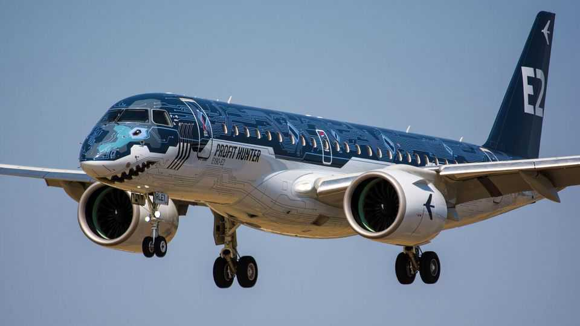
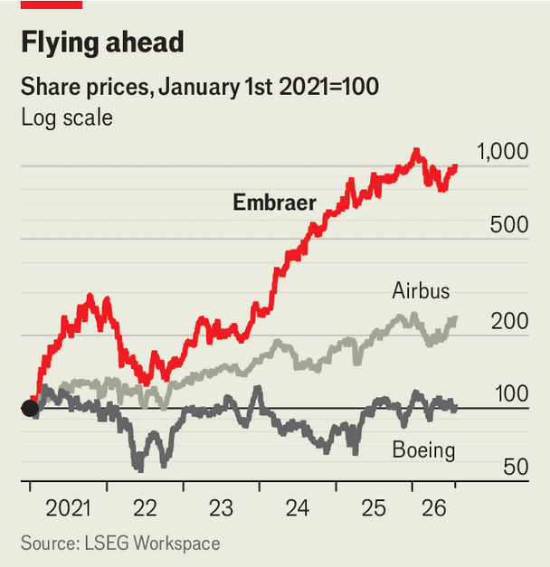

Forget Airbus and Boeing. Embraer is soaring
Its boss has ambitious plans for the future

Jul 30th 2026
Some passenger planes are named with purely utilitarian alphanumerics: think Airbus’s A380. Occasionally the aerospace giants aim to convey something loftier. Boeing’s 787 Dreamliner presents an image of modern comfort; Airbus’s A320neo highlights its use of the latest in aviation technology. Embraer, the world’s third-largest maker of passenger jets, takes a blunter approach. Since 2017 it has marketed its fuel-efficient E2 regional jet as the “Profit Hunter”.
The Brazilian company is a fraction of the size of Airbus and Boeing. But it has had a remarkable few years. Demand is soaring not only for its smaller passenger planes, but also for the private and military jets it offers. In 2021 the company delivered a total of 141 planes. This year it might reach 255. On July 24th the company reported that its order backlog had reached a record $34.5bn. Francisco Gomes Neto, Embraer’s boss, sees an opportunity for “substantial growth” ahead. Investors agree. Since the start of 2021 its share price has risen roughly ten-fold, far outpacing those of Airbus or Boeing (see chart). Some now speculate that Embraer may take a tilt at the market for larger jets, going nose-to-nose with the aerospace industry’s twin giants.

Embraer is benefiting from a number of tailwinds. Airlines these days must wait eight to ten years for a large narrow-body plane from Airbus or Boeing, which have a combined order backlog of 16,000 passenger jets thanks to rising demand for air travel and long-running supply-chain snags dating back to the covid-19 pandemic. That has led to a surge in demand for the smaller E2, which can be delivered in less than two years.
A growing preference for direct travel between smaller airports rather than through giant hubs will further boost demand for smaller planes to fly new routes, says Ron Baur of Azorra, a leasing firm that has over 50 e2s on order. The aircraft’s only direct competitor by size is the a220 from Airbus, in a market that Embraer forecasts at 8,500 such planes over the next two decades. As Mr Gomes Neto points out, even if it is only half that number and Embraer gets half the orders, the demand will still occupy its production capacity for 20 years. Moreover, Embraer’s even smaller E175 jet is the only aircraft in production that is available to regional feeder airlines in America, owing to collective bargaining agreements with pilots’ unions that restrict the maximum size of plane they can use.
Then there is the surge in private-jet sales that has been under way since the pandemic. Embraer is dominant in the market for small and medium-sized models. Its Phenom 300, which seats up to ten passengers, has been the best seller in its class for 14 years. Booming defence spending around the world has also lifted orders for the kc390, a military-transport plane. And a controlling stake in EVE, a flying-taxi firm, looks a better bet now that the vast number of startups in the field has been whittled down to a handful of plausible survivors.
Yet Mr Gomes Neto thinks he must “prepare the company for a new cycle of products that will support more ambitious growth”. One possibility is to make a large private jet. A bolder and riskier step would be to develop a bigger commercial jet to take on Airbus and Boeing, which are expected to roll out replacements for their core narrow-body planes towards the end of the 2030s. Neither has much incentive to make big investments while the current ones are selling well, which could create an opening for Embraer.
Breaking the duopoly’s grip would be a huge undertaking. Bombardier’s attempt nearly bankrupted it and ended in a forced sale of the programme for a nominal sum to Airbus in 2018 (where it became the A220). Guillaume Faury, Airbus’s boss, has warned Embraer to “think twice”. Yet the rewards of taking even a small share of a market that Boeing puts at 36,000 jets over the next two decades would also be far greater than for a new private jet. Ron Epstein of Bank of America says it would take Embraer to the “next level”.
Embraer may never again have such an opportunity to put its experience in manufacturing and marketing commercial jets to work. Mr Gomes Neto points out that over 20 years or so it has certified almost 20 new aircraft—an impressive performance. The firm’s reputation means that prospective customers would take it seriously. But it would need to find partners to stump up some of the $10bn or so that the new plane would cost to develop, says Alberto Valerio of UBS, a bank, including perhaps an engine-maker and other suppliers, as well as customers and outside investors.
The question of whether to go after the duopoly is rumoured to divide opinion at Embraer. Luckily it has plenty of time to make a decision. As Mr Gomes Neto insists: “We are very comfortable with the situation we have”. ■